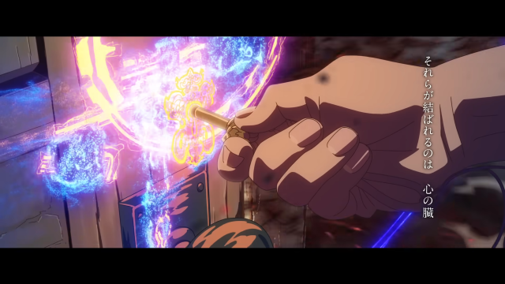
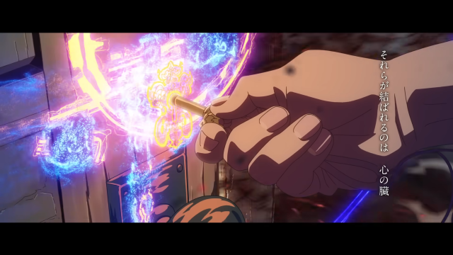

《鈴芽之旅》（日語：すずめの戸締まり）是日本動畫導演新海誠編劇兼執導的動畫電影，為新海誠第8部動畫電影[8]，亦其繼《你的名字》、《天氣之子》後，第3部牽涉災難題材的電影，3片合稱作新海誠的《災難三部曲》[9]，2022年11月11日在日本國內上映、隔年春季在海外上映。標語為「門的另一端，存在著所有的時間——」（扉の向こうには、すべての時間があった——）。故事講述少女岩戶鈴芽、與以關閉災難之門為使命的「關門師」宗像草太，為了關閉災難之門展開縱貫日本列島的冒險旅程。
新海誠創作本片的靈感，源自工作前往日本各地期間看見人口減少綠地增加、嚴重特殊傳染性肺炎疫情期間發現原為鬧區的東京新宿變得寂靜的現象，構思電影和小說劇情時融入東日本大震災的事件。本片為新海誠首度採用公路電影形式創作的作品，故事舞台遍及九州宮崎縣、四國愛媛縣、神戶、東京、宮城縣等地。
